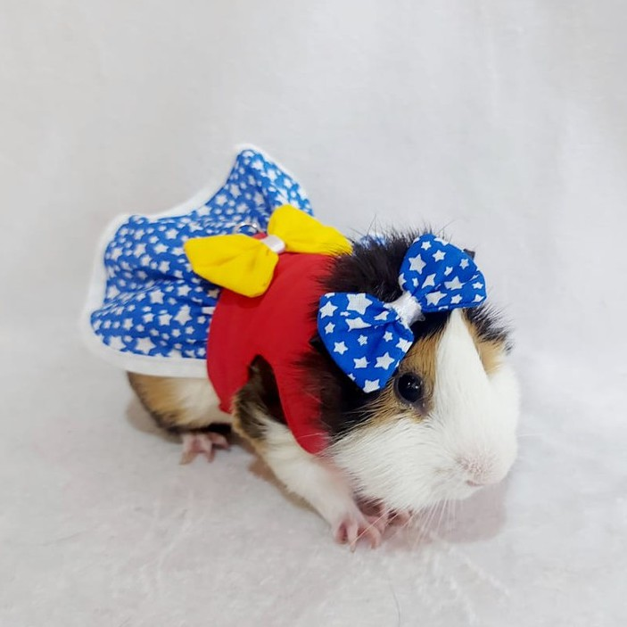

<!-- Exercício do slide 08 - aula 02 - modulo 01 - semana 11 -->

<button (click)="verImagem = 'Gato'" > Gato </button>
<button (click)="verImagem = 'Cachorro'"> Cachorro </button>
<button (click)="verImagem = 'porqIndia'"> Porquinho da india </button>
<br />
<!-- O ngIg fará a dinamica de troca de imagem a cada clique de botão -->
<!-- o ngIf é atualizado a todo momento, não precisa de um start para fazer a verificação
basicamente a qualquer mudança na variável ou valor que estiver na condição do ngIf 
ele irá atualizar automaticamente -->


